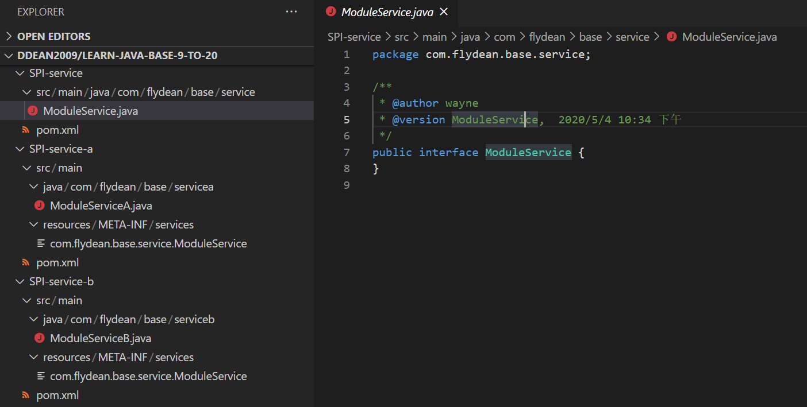
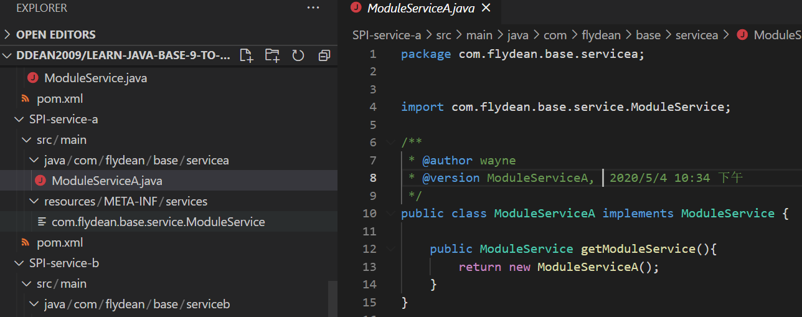
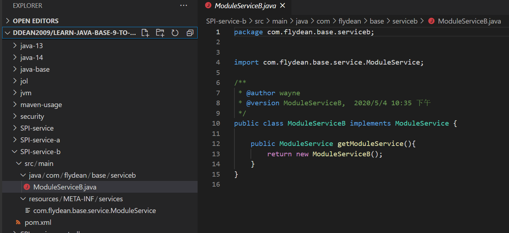
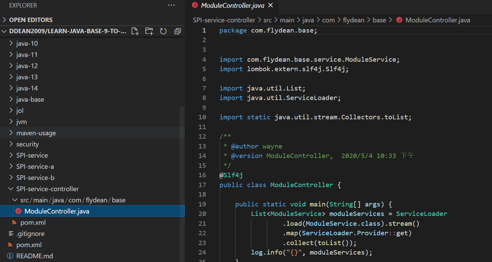

在java中使用SPI创建可扩展的应用程序
简介
什么是可扩展的应用程序呢？可扩展的意思是不需要修改原始代码，就可以扩展应用程序的功能。我们将应用程序做成插件或者模块。
这样可以在不修改原应用的基础上，对系统功能进行升级或者定制化。
本文将会向大家介绍如何通过java中的SPI机制实现这种可扩展的应用程序。
SPI简介
SPI的全称是Java Service Provider Interface。是java提供的一种服务发现的机制。
通过遵循相应的规则编写应用程序之后，就可以使用ServiceLoader来加载相应的服务了。
SPI的实现主要分为4个部分：
- Service Provider Interface: SPI是一个interface或者是抽象类，其中定义了我们需要扩展实现的功能。
- Service Providers：这是SPI的具体实现，提供了具体的实现功能
- SPI Configuration File：SPI的配置文件，通过在配置文件我们来配置相关的SPI发现信息。
- ServiceLoader: ServiceLoader是用来加载和发现服务的java类，并提供了很多有用的方法。
SPI的普通java实现
讲完SPI的定义，大家可能还是不清楚SPI到底是做什么的，又该怎么使用它。
不用急，我们下面通过一个例子来说明。
首先创建一个module:SPI-service,里面主要定义了一个ModuleService接口：
1 | public interface ModuleService { |

然后再分别创建两个module，作为ModuleService的实现：
1 | public class ModuleServiceA implements ModuleService { |
接着分别在两个module中创建META-INF/services文件夹，并且在里面创建两个以 Service Provider Interface限定名为名字的文件，这里文件名是：com.flydean.base.service.ModuleService，文件里面存放的是SPI的具体实现类：
1 | com.flydean.base.servicea.ModuleServiceA |


最后，我们需要创建一个使用SPI的类：
1 | public class ModuleController { |

为了更好的展示扩展应用的实际使用，我们分别创建4个模块。在实际应用中，只需要将这些jar包加入应用程序的classpath即可。
运行看下输出结果：
1 | [com.flydean.base.servicea.ModuleServiceA@16f65612, |
从结果看到，我们获得了两个ModuleService。证明系统扩展成功。
思考
1、配置文件为什么要放在META-INF/services下面？
我们可以在java.util.ServiceLoader中找到以下代码。
private static final String PREFIX = "META-INF/services/";2、ServiceLoader读取实现类是什么时候实例化的？
ServiceLoader.LazyIterator.nextService中实例化，即load的结果迭代时才会被实例化。